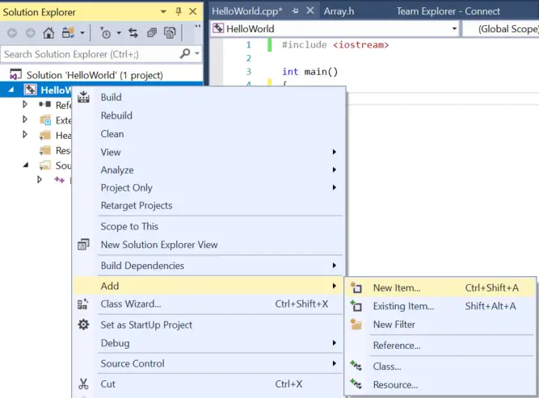
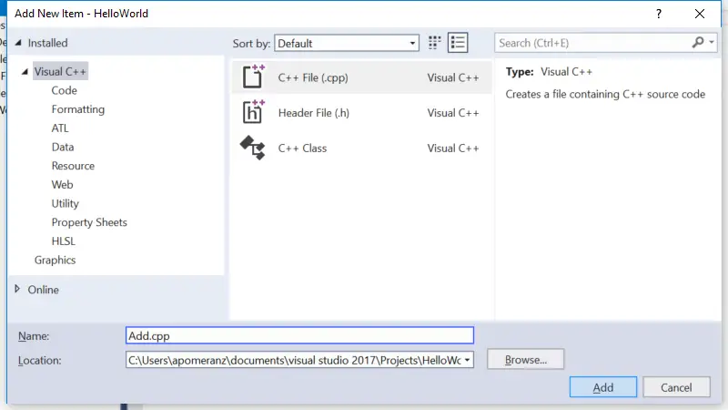
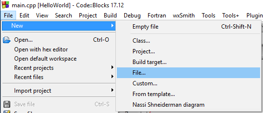
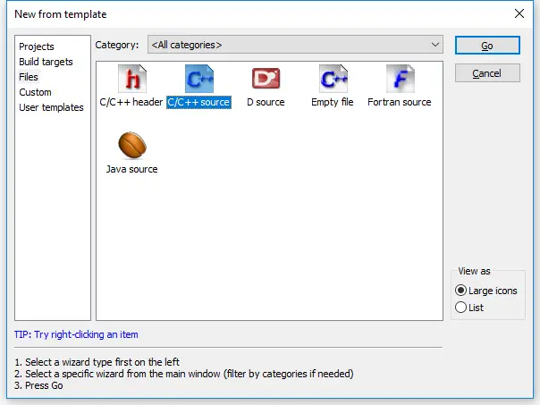
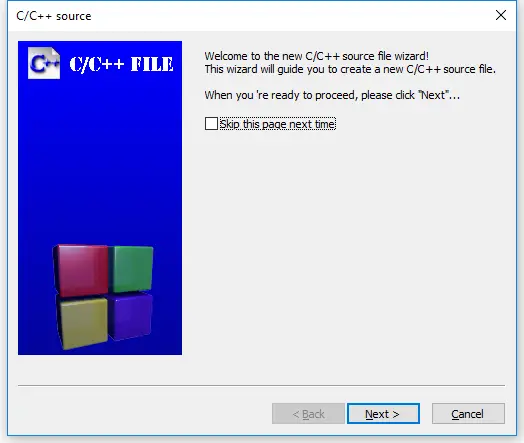
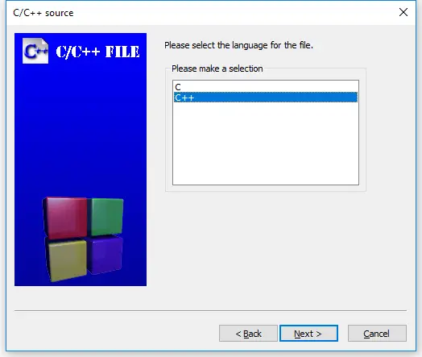
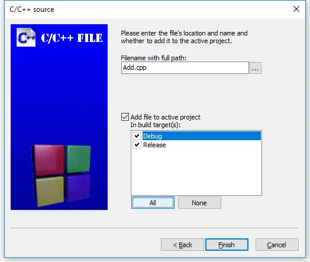

2.8 — 多代码文件的程序
向项目添加文件
随着程序变大，通常会将其拆分为多个文件，以便于组织或重用。使用 IDE 的一个优势是，它们使处理多个文件变得更容易。您已经知道如何创建和编译单文件项目。向现有项目添加新文件非常简单。
最佳实践
向项目添加新代码文件时，请为其赋予 .cpp 扩展名。
适用于 Visual Studio 用户
在 Visual Studio 中，右键单击 Source Files 解决方案资源管理器窗口中的文件夹（或项目名称），然后选择 添加 > 新项...。

确保已选择 C++ 文件 (.cpp) 为新文件命名，它将被添加到项目中。
注意：您的 Visual Studio 可能会显示紧凑视图而非上述完整视图。您可以使用紧凑视图，或点击“显示所有模板”以获取完整视图。

注意：如果从 文件菜单 而非解决方案资源管理器中的项目创建新文件，新文件将不会自动添加到项目中。您需要手动将其添加到项目。为此，请右键单击 Source Files 在 Solution Explorer，然后选择 添加 > 现有项，然后选择您的文件。
现在编译程序时，您应该会看到编译器列出正在编译的文件名。
对于 Code::Blocks 用户
在 Code::Blocks 中，转到 文件菜单 并选择 新建 > 文件...。

在 从模板新建 对话框，选择 C/C++ 源文件 并点击 前进。

你可能会看到，也可能看不到一个 欢迎使用 C/C++ 源文件向导 此时弹出的对话框。如果出现了，请点击 下一步。

在向导的下一页中，选择“C++”，然后点击 下一步。

现在为新文件命名（别忘了 .cpp 扩展名），然后点击 全部 按钮以确保所有构建目标都被选中。最后，选择 完成。

现在编译程序时，您应该会看到编译器列出正在编译的文件名。
对于 gcc 用户
从命令行中，你可以使用自己偏好的编辑器自行创建额外文件，并为其命名。编译程序时，你需要在编译命令中包含所有相关的代码文件。例如： g++ main.cpp add.cpp -o main，其中 main.cpp 和 add.cpp 是你的代码文件的名称，而 main 是输出文件的名称。
对于 VS Code 用户
要创建新文件，请选择 视图 > 资源管理器 从顶部导航栏打开资源管理器窗格，然后点击 新文件 项目名称右侧的图标。或者，选择 文件 > 新建文件 从顶部导航栏中选择。然后为你的新文件命名（别忘了 .cpp 扩展名）。如果文件出现在 .vscode 文件夹内，将其向上拖动一级到项目文件夹。
接下来打开 tasks.json 文件，找到这行 "${file}",。
这里你有两个选项：
- 如果你希望明确指定哪些文件被编译，请将
"${file}",替换为你希望编译的每个文件的名称，每行一个，如下所示：
"main.cpp","add.cpp",
- 读者“geo”报告说，你可以让 VS Code 自动编译目录中的所有 .cpp 文件，只需将
"${file}",替换为"${fileDirname}\\**.cpp"（在 Windows 上）。 - 读者“Orb”报告说
"${fileDirname}/**.cpp"在 Unix 上有效。
一个多文件示例
在课程 2.7 -- 前向声明和定义，我们看了一个无法编译的单文件程序：
#include <iostream>
int main()
{
std::cout << "The sum of 3 and 4 is: " << add(3, 4) << '\n';
return 0;
}
int add(int x, int y)
{
return x + y;
}
当编译器到达对 add 的第 5 行时 main它不知道 add 是什么，因为我们尚未定义 add 直到第 9 行！我们的解决方案是重新排列函数（将 add 放在前面）或者使用前向声明对 add。
现在让我们来看一个类似的多文件程序：
add.cpp:
int add(int x, int y)
{
return x + y;
}
main.cpp:
#include <iostream>
int main()
{
std::cout << "The sum of 3 and 4 is: " << add(3, 4) << '\n'; // 编译错误
return 0;
}
你的编译器可能会先编译其中任一个 add.cpp 或 main.cpp 先编译。无论哪种方式， main.cpp 都将编译失败，并产生与前一个示例相同的编译器错误：
main.cpp(5) : error C3861: 'add': identifier not found
原因也完全相同：当编译器到达 main.cpp的第5行时，它不知道标识符 add 是什么。
请记住，编译器是单独编译每个文件的。它不知道其他代码文件的内容，也不会记住之前编译过的代码文件中的任何信息。因此，即使编译器可能先前见过函数 add 的定义（如果它先编译了 add.cpp ），它也不会记住。
这种有限的可见性和短暂记忆是有意为之，原因如下：
- 它允许项目的源文件以任意顺序编译。
- 当我们更改一个源文件时，只需要重新编译该源文件。
- 它降低了不同文件中标识符之间命名冲突的可能性。
我们将在下一课中探讨当名称确实冲突时会发生什么（2.9 -- 命名冲突和命名空间简介)。
我们这里的解决方案选项与之前相同：将函数 add 的定义放在函数 main之前，或者通过前向声明满足编译器。在这种情况下，由于函数 add 位于另一个文件中，重新排序选项不可行。
这里的解决方案是使用前向声明：
main.cpp（带前向声明）：
#include <iostream>
int add(int x, int y); // 需要这样做，以便 main.cpp 知道 add() 是在其他地方定义的函数
int main()
{
std::cout << "The sum of 3 and 4 is: " << add(3, 4) << '\n';
return 0;
}
add.cpp（保持不变）：
int add(int x, int y)
{
return x + y;
}
现在，当编译器编译 main.cpp，它将知道标识符 add 是什么并感到满意。链接器会将函数调用连接到 add 在 main.cpp 到函数 add 在 add.cpp。
使用这种方法，我们可以让文件访问位于另一个文件中的函数。
尝试编译 add.cpp 以及 main.cpp 并亲自使用前向声明。如果遇到链接器错误，请确保已将 add.cpp 正确添加到项目或编译命令行中。
提示
由于编译器单独编译每个代码文件（然后忘记它看到的内容），每个使用 std::cout 或 std::cin 需要 #include <iostream>。
在上面的例子中，如果 add.cpp 使用了 std::cout 或 std::cin，它将需要 #include <iostream>。
关键提示
当在表达式中使用标识符时，该标识符必须连接到其定义。
- 如果编译器在正在编译的文件中既没有看到前向声明也没有看到标识符的定义，它会在使用该标识符的位置报错。
- 否则，如果同一文件中存在定义，编译器会将标识符的使用连接到其定义。
- 否则，如果定义存在于另一个文件中（并且对链接器可见），链接器会将标识符的使用连接到其定义。
- 否则，链接器会发出错误，指示无法找到该标识符的定义。
出错了！
第一次尝试处理多个文件时，有很多地方可能出错。如果你尝试了上面的例子并遇到了错误，请检查以下几点：
- 如果你收到关于 add 未在 main中定义的编译器错误，你很可能忘记了函数 add 在 main.cpp。
- 如果你收到关于 add 未定义的链接器错误，例如
unresolved external symbol "int __cdecl add(int,int)" (?add@@YAHHH@Z) referenced in function _main
2a. ……最可能的原因是 add.cpp 未正确添加到你的项目中。编译时，你应该看到编译器列出 main.cpp 和 add.cpp。如果你只看到 main.cpp，那么 add.cpp 肯定没有被编译。如果你使用的是 Visual Studio 或 Code::Blocks，你应该在 IDE 左侧或右侧的解决方案资源管理器/项目窗格中看到 add.cpp 列出的文件。如果没有，请右键单击你的项目，添加该文件，然后重新编译。如果你在命令行上编译，不要忘记在编译命令中包含 main.cpp 和 add.cpp
2b. ……可能是你错误地将 add.cpp 添加到了错误项目中。
2c. ……可能是该文件被设置为不编译或链接。检查文件属性，确保文件配置为编译/链接。在 Code::Blocks 中，编译和链接是独立的复选框，都应勾选。在 Visual Studio 中，有一个“从生成中排除”选项，应设置为“否”或留空。请确保分别检查每个生成配置（例如调试和发布）。
- 不要 不是 #include “add.cpp” 从 main.cpp。虽然这样做在这种情况下可以编译，但 #include .cpp 文件会增加命名冲突和其他未预料后果的风险（尤其是当程序变大变复杂时）。我们将在第 2.10 -- 预处理器简介。
总结
C++ 的设计使得每个源文件可以独立编译，无需了解其他文件的内容。因此，文件实际的编译顺序不应产生影响。
一旦我们进入面向对象编程，我们将大量使用多文件项目，因此现在正是确保你理解如何添加和编译多文件项目的好时机。
提醒：每当你创建一个新的代码（.cpp）文件时，需要将其添加到项目中，以便它能够被编译。
小测验时间
问题 #1
将以下程序拆分为两个文件（main.cpp 和 input.cpp）。main.cpp 应包含 main 函数，input.cpp 应包含 getInteger 函数。
#include <iostream>
int getInteger()
{
std::cout << "Enter an integer: ";
int x{};
std::cin >> x;
return x;
}
int main()
{
int x{ getInteger() };
int y{ getInteger() };
std::cout << x << " + " << y << " is " << x + y << '\n';
return 0;
}
input.cpp：
#include <iostream> // we need iostream since we use it in this file
int getInteger()
{
std::cout << "Enter an integer: ";
int x{};
std::cin >> x;
return x;
}
main.cpp:
#include <iostream> // we need iostream here too since we use it in this file as well
int getInteger(); // 函数 getInteger 的前向声明
int main()
{
int x{ getInteger() };
int y{ getInteger() };
std::cout << x << " + " << y << " is " << x + y << '\n';
return 0;
}
如果链接器报错说存在未定义的引用 getInteger()，那么你很可能忘记编译 input.cpp。